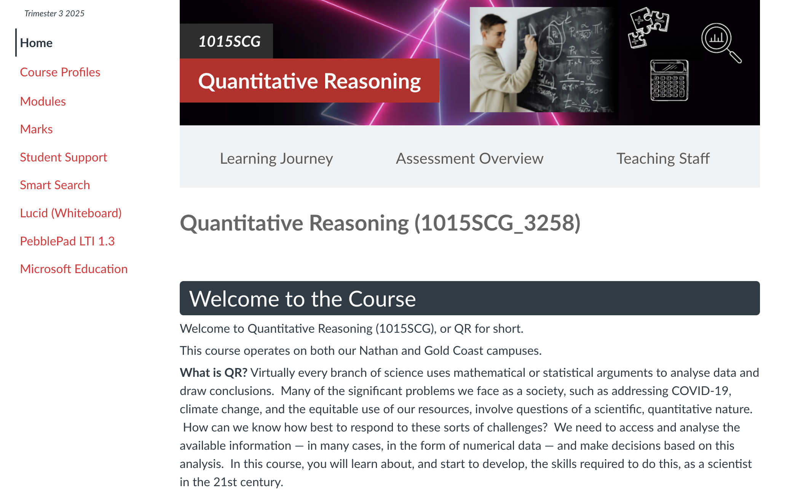
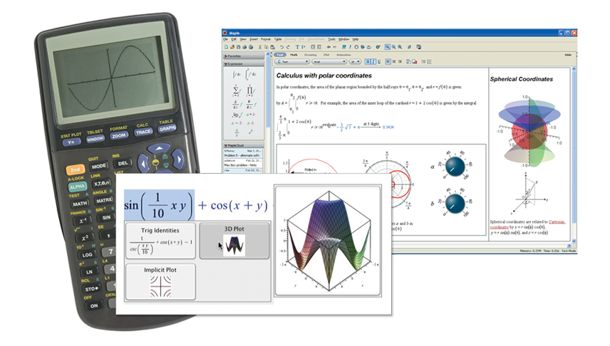
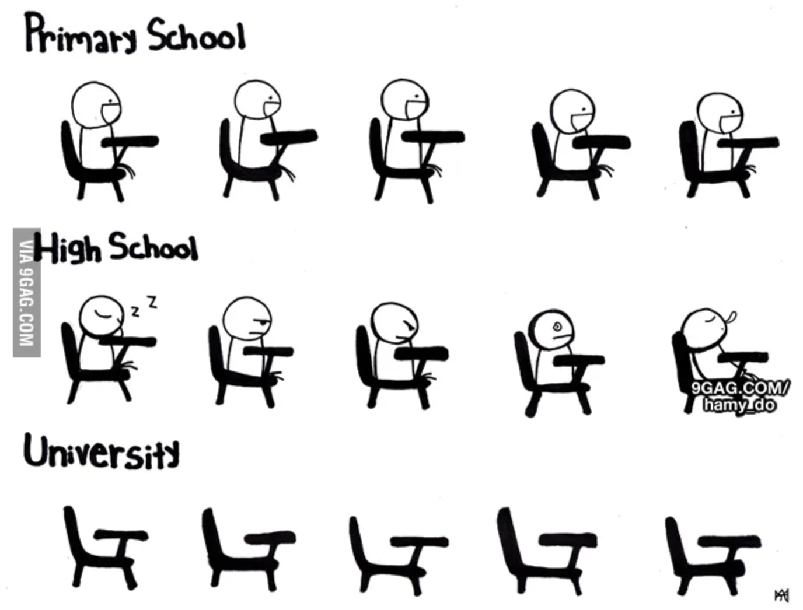
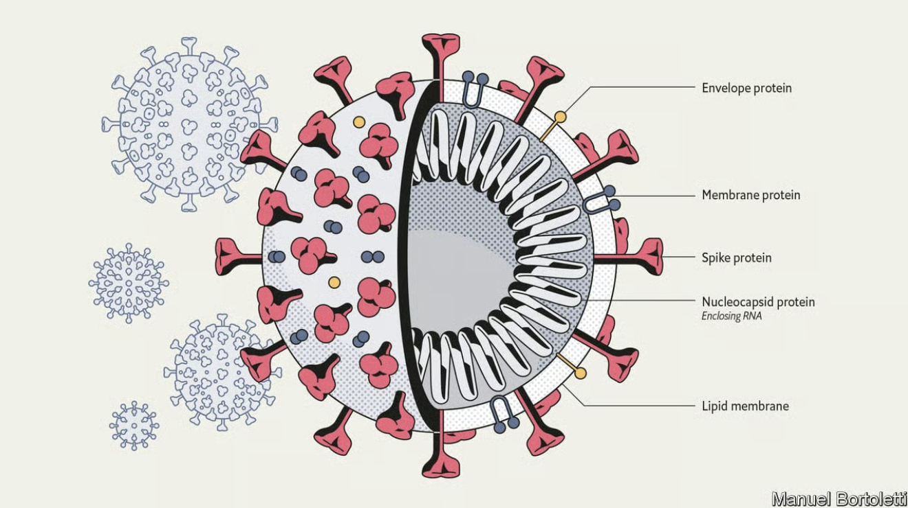

Quantitative Reasoning
1015SCG
Lecture 1

Quantitative Reasoning
Welcome!

People
• Gold Coast
- Convenor/Lecturer: Dr Juan Carlos Ponce Campuzano
- Workshop demonstrator: Jordan Holdorf
• Nathan
- Main Convenor: Dr Michelle Ward
- Lecturer: Dr Amal Succarie
- Workshop demonstrator: Llewyn Randall
Navigating the course site
|
 |
Navigating the course site
Do especially check:
|
How the course works
- Pre-recorded videos
- Lecture Notes
- In-person lectures
- Face-to-face workshops (in even weeks, mandatory and marked)
- PASS sessions
What if you need help?
|
Course stuff
|
Bigger stuff
|
Assessment
- No Exam 😃
- 50% of total marks to pass
-
Extensions/Deferred assessment/Special consideration:
Apply via the Official Channel
Workshop Tasks - 25%
- Workshops in Even weeks only - 6 in total
- Report writing task throughout all workshops - marked component
- The marks will only be granted during the workshop
- If you have a valid reason to miss the workshop apply for deferred assessment until next workshop within 3 days and provide supporting documentation (NOT the extension). Do the task at home and present it for marking to your demonstrator during the next workshop.
What do you need for workshops?
- Device with working Excel and Word (not online!) 💻
- Office available for all students - instructions
- The marks will only be granted during the workshop
- Basic Excel knowledge - nice beginners' guide
Employability Task A and B - 5%
- Part A: Identify vital Maths skills and key topics (week 3)
- Part B: Evidence your skills and plan the way forward (week 9)
Full details in Canvas → Modules → Employability Tasks
📝
Maths & Inference and Scientific Critiquing Tasks
-
♾️ Maths & Inference Task - 30% (week 7)
Full details in Canvas → Modules → Maths and Inference Task
- 🔬 Scientific Critiquing Task - 35% (week 11)
Full details in Canvas → Modules → Scientific Critiquing Task
📝
Assessment: Summary
| Item | Weight | Due |
|---|---|---|
| Workshop (best 5) | 25% | Ongoing |
| Employability A | 5% | Week 3 |
| Maths and Inference | 30% | Week 7 |
| Employability B | 5% | Week 9 |
| Scientific Critiquing | 35% | Week 11 |
| 🎉 NO FINAL EXAM!! 🎉 | ||
Schedule Part I
|
|
Schedule Part II
|
|
What is QR?

What is QR?
Is this just another Maths course? Not really!


Not just another Maths course
- Relate the use of mathematics to your own scientific studies and interests

Image source: National Academies
Not just another Maths course
- Use computational tools to perform mathematical calculations

Image source: Mapple Soft.
Not just another Maths course
- Construct and critique quantitative scientific arguments

Image source: An Introduction to Scientific Argumentation
Not just another Maths course
- Communicate scientific arguments effectively in writing

Not just another Maths course
- Construct suitable mathematical models of real-world phenomena

|

|
| \(T(t)=\left(T_0-T_m\right) e^{-kt} + T_m\) | $\ds P(t) = \frac{\theta P_0 e^{rt}}{\theta-P_0+P_0e^{rt}}$ |
Not just another Maths course
- Solve problems related to mathematical models of real-world phenomena
\[ \rho \left(\frac{\partial \v}{\partial t} + \v \cdot \nabla \v \right) = -\nabla p + \mu \nabla^2 \v + \F, \quad \nabla \cdot \v = 0. \]
Fluid simulation by Amanda Ghassaei 🔄 (Reset/Re-start)
Not just another Maths course
- Relate the use of mathematics to your own scientific studies and interests
- Use computational tools to perform mathematical calculations
- Construct and critique quantitative scientific arguments
- Communicate scientific arguments effectively in writing
- Construct suitable mathematical models of real-world phenomena
- Solve problems related to mathematical models of real-world phenomena
Why QR?
Example - attendance vs grades
Question: Is there a relationship between the course attendance and the grades?

- How would you approach answering this questions?
- What do we need to answer it?
Example - attendance vs grades
Question: Is there a relationship between the course attendance and the grades?
|
|
Example - attendance vs grades
Research results: Better attendance leads to better success.

Source: Kassarnig V, Bjerre-Nielsen A, Mones E, Lehmann S, Lassen DD (2017) Class attendance, peer similarity, and academic performance in a large field study. PLoS ONE 12(11): e0187078. doi.org/10.1371/journal.pone.0187078
Why quantitative reasoning?
To answer scientific questions
- Quantitative: the arguments involve numbers
- Reasoning: we want to take a scientific approach
In this course, you will learn
- Why and how mathematics is important to seemingly non-mathematical sciences
- How to use mathematical methods to answer scientific questions
- How to present those answers
Quantitative Reasoning
Source: Elrod, Susan. 2014. Quantitative Reasoning: The Next “Across the Curriculum” Movement. Peer Review 16 (3).
Examples
- Vaccines

Image source: mRNA vaccines - What they are and what they are not
Examples
- Corona virus

Image source: Understanding SARS-CoV-2 and the drugs that might lessen its power
Examples
- Climate change
Image source: Earth pollution global warming and heat
Examples
- Green energy

Image source: Wind turbine solar panel alternative energy source
Examples
- Elections

Image source: How Voter Turnout Varies Around the World
Examples
- 🚀 Motion of Objects/Particles Affected by Gravity
$y(x) = \ds \frac{g}{2u^2} x^2+\frac{v}{u}x$
Course Topics
- Maths: Numbers and data, Inferring from data, Functions (weeks 2-5)
- Critical Thinking, Logical Arguments, Approximations (weeks 6-8)
- Communicating science and scientific writing (weeks 9-10)
- (Big) Data Science (week 11)
What will we look at? - Maths
- Numbers and data
- Ratios, related rates, linear relations
- Inference from data sets
- Functions we use to represent data
What will we look at? - Science
-
Communicating science:
- How do we structure a scientific argument? (how do I write up my own scientific findings)
- How do we critique a scientific argument? (how do I work out whether I agree with someone else's)
- How do we present scientific data? (why are pie charts so terrible?)
-
Problem posing and problem solving:
- Converting word problems into mathematical problems
- Getting approximate answers (eg how much water do we flush down the toilet each year?)
-
Data Science:
- Working with large data sets
- Deeper inference from data sets
Some nice references

|

|
What is science?
(Source: Hohenberg, P.C. What is Science?)
|
Science alone of all the subjects contains within itself the lesson of the danger of belief in the infallibility of the greatest teachers in the preceding generation . . . As a matter of fact, I can also define science another way: Science is the belief in the ignorance of experts. Richard Feynman (1968) The use of evidence to construct testable explanations and predictions of natural phenomena, as well as the knowledge generated through this process. The National Academy of Sciences (2008) |
Science is not an encyclopedic body of knowledge about the universe. Instead, it represents a process for proposing and refining theoretical explanations about the world that are subject to further testing and refinement. But, in order to qualify as ‘scientific knowledge,’ an inference or assertion must be derived by the scientific method. Proposed testimony must be supported by appropriate validation—i.e., ‘good grounds,’ based on what is known. In short, the requirement that an expert’s testimony pertain to ‘scientific knowledge’ establishes a standard of evidentiary reliability The US Supreme Court (1993) in Daubert v. Merrell |
|
Science alone of all the subjects contains within itself the lesson of the danger of belief in the infallibility of the greatest teachers in the preceding generation... As a matter of fact, I can also define science another way: Science is the belief in the ignorance of experts. The National Academy of Sciences (2008) |
The net of science covers the empirical universe: what is it made of (fact) and why does it work this way (theory). Stephen Jay Gould (1997) |
What are properties of science?
(Source: Hohenberg, P.C. What is Science?)
- Science is collective, public knowledge
- Science is universal
- Science is the cumulation of (on-going) scientific endeavor
- Science is bathed in ignorance and subject to change
What lies outside of science (and this course)?
(and this course)
- Moral issues
- Existential issues
- Political issues
The Scientific Method
Comments on the Scientific Method
- Distinguish facts from assumptions
- Avoid (un)consciously favoring expected result (confirmation bias)
- Use other available data, beyond what we find ourselves
- Extraordinary claims require extraordinary evidence
Comments on the Scientific Method
- Correlation does not mean causation
-
Different forms of explanation
- Cause
- Causal mechanism
- Laws
- Underlying processes
- Occam's Razor - we prefer explanations that introduce the fewest new questions/assumptions
- Experimentation - design tests to minimize false confirmation and false rejection
- Negative results are part of the Scientific Method
- The Scientific Method isn't always linear
Quantitative Reasoning and the Scientific Method
|
|
|
👉 Maths/stats to evaluate quantities and provide data 💻 📈 📊
|
Statistical approaches to infer...
|
Mathematical models to investigate causation
|
Doing maths in the 21st century
In QR, we will focus on understanding how to set up mathematical problems
- We can 'outsource' solving those calculations to machines where possible
- We'll use calculators online calculators (www.wolframalpha.com), software 💻 (Excel, R)
- We will use Excel a lot! 📊 📈